警告Work-in-progress 🚧
You are reading the work-in-progress first edition of Causal Inference in R. This chapter is actively undergoing work and may be restructured or changed. It may also be incomplete.
Sensitivity analysis · 原书逐章中译
来源：Malcolm Barrett、Lucy D’Agostino McGowan、Travis Gerke，Causal Inference in R · Sensitivity analysis。 本页为中文翻译；原书代码块、公式、图表交叉引用和引用键均按原文保留。统计图在网页渲染时由 R 代码生成，静态插图直接引用原文件。 原书仓库采用 CC BY-NC-SA 4.0；代码采用 MIT 许可。请遵守原许可证并注明作者。
You are reading the work-in-progress first edition of Causal Inference in R. This chapter is actively undergoing work and may be restructured or changed. It may also be incomplete.
由于因果推断的许多假设无法验证，我们有理由担心结果的有效性。 本章将介绍一些方法，用来探查这些假设和结果的优缺点。 我们将探索两种主要方法：考察因果问题及相关 DAG 的逻辑含义，以及使用数学技术量化在其他情境下（例如存在未测量混杂时）结果会有多大不同。 这些方法称为敏感性分析：我们的结果对假设和分析中列出的条件以外的其他条件有多敏感？
我们从建模过程的起点——创建因果图——开始。 由于 DAG 编码了我们据以进行分析的假设，因此它们自然成为他人和我们自己进行质疑的切入点。
构成 DAG 的数学基础使我们既可以查询调整集等内容，也可以查询 DAG 的其他含义。 最简单的含义之一是：如果 DAG 正确且数据测量良好，任何有效调整集都应产生无偏的因果效应估计。 让我们考虑在 图 61.2 中介绍的 DAG。
coord_dag <- list(
x = c(
park_ticket_season = 0,
park_close = 0,
park_temperature_high = -1,
park_extra_magic_morning = 1,
wait_minutes_posted_avg = 2
),
y = c(
park_ticket_season = -1,
park_close = 1,
park_temperature_high = 0,
park_extra_magic_morning = 0,
wait_minutes_posted_avg = 0
)
)
labels <- c(
park_extra_magic_morning = "Extra Magic\nMorning",
wait_minutes_posted_avg = "Average\nwait",
park_ticket_season = "Ticket\nSeason",
park_temperature_high = "Historic high\ntemperature",
park_close = "Time park\nclosed"
)
emm_wait_dag <- dagify(
wait_minutes_posted_avg ~ park_extra_magic_morning +
park_close +
park_ticket_season +
park_temperature_high,
park_extra_magic_morning ~ park_temperature_high +
park_close +
park_ticket_season,
coords = coord_dag,
labels = labels,
exposure = "park_extra_magic_morning",
outcome = "wait_minutes_posted_avg"
)
curvatures <- rep(0, 7)
curvatures[5] <- 0.3
emm_wait_dag |>
tidy_dagitty() |>
node_status() |>
ggplot(
aes(x, y, xend = xend, yend = yend, color = status)
) +
geom_dag_edges_arc(curvature = curvatures, edge_color = "grey80") +
geom_dag_point() +
geom_dag_text_repel(
aes(label = label),
size = 3.8,
seed = 1630,
color = "#494949"
) +
scale_color_okabe_ito(na.value = "grey90") +
theme_dag() +
theme(legend.position = "none") +
coord_cartesian(clip = "off") +
scale_x_continuous(
limits = c(-1.25, 2.25),
breaks = c(-1, 0, 1, 2)
)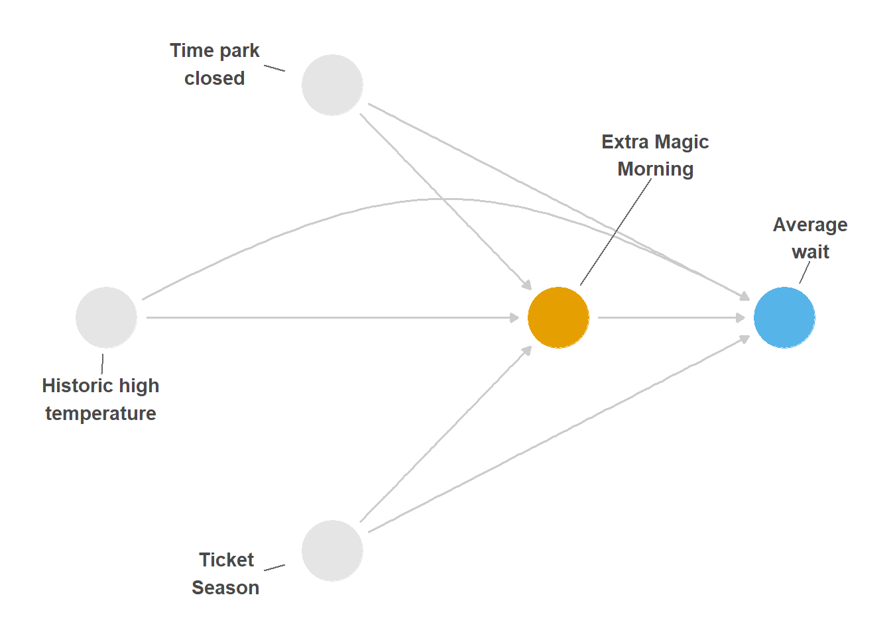
在 图 70.1 中，只有一个调整集，因为三个混杂因子分别表示独立的后门路径。 不过，假设我们使用的是 图 70.2，其中缺少从园区闭园时间和历史气温指向是否存在 Extra Magic Morning 的箭头。
emm_wait_dag_missing <- dagify(
wait_minutes_posted_avg ~ park_extra_magic_morning +
park_close +
park_ticket_season +
park_temperature_high,
park_extra_magic_morning ~ park_ticket_season,
coords = coord_dag,
labels = labels,
exposure = "park_extra_magic_morning",
outcome = "wait_minutes_posted_avg"
)
# produces below:
# park_ticket_season, park_close + park_ticket_season, park_temperature_high + park_ticket_season, or park_close + park_temperature_high + park_ticket_season
adj_sets <- unclass(dagitty::adjustmentSets(
emm_wait_dag_missing,
type = "all"
)) |>
map_chr(\(.x) glue::glue('{unlist(glue::glue_collapse(.x, sep = " + "))}')) |>
glue::glue_collapse(sep = ", ", last = ", or ")
curvatures <- rep(0, 5)
curvatures[3] <- 0.3
emm_wait_dag_missing |>
tidy_dagitty() |>
node_status() |>
ggplot(
aes(x, y, xend = xend, yend = yend, color = status)
) +
geom_dag_edges_arc(curvature = curvatures, edge_color = "grey80") +
geom_dag_point() +
geom_dag_text_repel(
aes(label = label),
size = 3.8,
seed = 1630,
color = "#494949"
) +
scale_color_okabe_ito(na.value = "grey90") +
theme_dag() +
theme(legend.position = "none") +
coord_cartesian(clip = "off") +
scale_x_continuous(
limits = c(-1.25, 2.25),
breaks = c(-1, 0, 1, 2)
)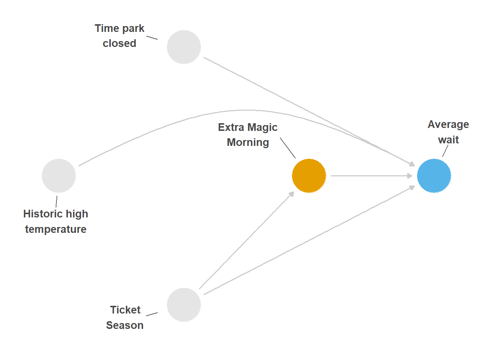
现在有 4 个潜在调整集：park_ticket_season, park_close + park_ticket_season、park_temperature_high + park_ticket_season 或 park_close + park_temperature_high + park_ticket_season。 表 70.1 给出了每个调整集的 IPW 估计值。 这些效应差异很大。 由于各估计使用的变量不同，而变量的测量可能并不完美，因此估计值出现一些轻微差异是预期之中的；然而，如果这个 DAG 正确，我们应当看到它们比现在更加接近。 尤其是，包含与不包含园区闭园时间的模型似乎相差 3 分钟。 这些结果之间的差异意味着，我们指定的因果结构存在问题。
seven_dwarfs <- touringplans::seven_dwarfs_train_2018 |>
filter(wait_hour == 9)
# we'll use `.data` and `.trt` later
fit_ipw_effect <- function(
.fmla,
.data = seven_dwarfs,
.trt = "park_extra_magic_morning",
.outcome_fmla = wait_minutes_posted_avg ~ park_extra_magic_morning
) {
.trt_var <- rlang::ensym(.trt)
# fit propensity score model
propensity_model <- glm(
.fmla,
data = .data,
family = binomial()
)
# calculate ATE weights
.df <- propensity_model |>
augment(type.predict = "response", data = .data) |>
mutate(w_ate = wt_ate(.fitted, !!.trt_var, exposure_type = "binary"))
# fit ipw model
lm(.outcome_fmla, data = .df, weights = w_ate) |>
tidy() |>
filter(term == .trt) |>
pull(estimate)
}
effects <- list(
park_extra_magic_morning ~ park_ticket_season,
park_extra_magic_morning ~ park_close + park_ticket_season,
park_extra_magic_morning ~ park_temperature_high + park_ticket_season,
park_extra_magic_morning ~ park_temperature_high +
park_close +
park_ticket_season
) |>
map_dbl(fit_ipw_effect)
tibble(
`Adjustment Set` = c(
"Ticket season",
"Close time, ticket season",
"Historic temperature, ticket season",
"Historic temperature, close time, ticket season"
),
ATE = effects
) |>
arrange(desc(ATE)) |>
gt()| Adjustment Set | ATE |
|---|---|
| Close time, ticket season | 6.579 |
| Historic temperature, close time, ticket season | 6.199 |
| Ticket season | 4.114 |
| Historic temperature, ticket season | 3.627 |
替代调整集是探查 DAG 逻辑含义的一种方式：如果 DAG 正确，就可能有多种方法正确地处理开放的后门路径。 反过来也一样：研究问题的因果结构还意味着某些关系应当为零。 研究者利用这一含义的一种方式是使用负对照。 负对照可以是暴露（负暴露对照）或结局（负结局对照），它在尽可能多的方面与研究问题相似，但不应存在因果效应。 Lipsitch, Tchetgen Tchetgen, 和 Cohen (2010) 描述了观察性研究中的负对照。 在该文中，他们提到了实验室科学中的标准对照。 在实验室实验中，以下任一操作都应产生零效应：
实验室工作并没有什么特殊之处；这些科学家只是在探查他们的理解和假设所蕴含的逻辑含义。 要找到一个好的负对照，通常需要扩展 DAG，将围绕研究问题的更多因果结构纳入其中。 让我们看几个例子。
首先来看负暴露对照。 如果 Extra Magic Morning 确实会增加等待时间，那么可以合理地认为，这种效应具有时间限制。 换句话说，经过一段时间后，Extra Magic Morning 的效应应当会消失。 我们把今天称为 i，把前一天称为 i - n，其中 n 是负暴露对照发生在结局之前的天数。 首先，我们考察 n = 63，例如，63 天前（九周前）是否安排了 Extra Magic Morning。 这是一个相当合理的起点：63 天后等待时间仍然受到影响的可能性很小。 这种分析相当于去掉一种必需成分：等待的时间太长，不可能构成一个现实的原因。 任何残留效应都可能归因于残余混杂。
让我们用 DAG 将这种情形可视化。 在 图 70.3 中，我们向原始 DAG 添加了一个相同的层：现在有两个 Extra Magic Morning，一个对应第 i 天，另一个对应第 i - 63 天。 同样，每一天的混杂因子也有两个版本。 这个 DAG 中的一个关键细节是，我们假设第 i - 63 天的 Extra Magic Morning 会影响第 i 天的情况；某一天是否安排 Extra Magic Morning，可能会影响另一天是否安排。 全年如何安排这些时段并不是随机的。 如果这是真的，我们确实会预期看到一种效应：通过第 i 天 Extra Magic Morning 状态产生的间接效应。 要得到有效的负对照，我们需要使该效应失活，统计上可以通过控制第 i 天是否有 Extra Magic Morning 来实现。 因此，根据该 DAG，我们的调整集可以是混杂因子的任意组合（只要每个混杂因子至少有一个版本），再加上第 i 天的 Extra Magic Morning（以抑制间接效应）。
labels <- c(
x63 = "Extra Magic\nMorning (i-63)",
x = "Extra Magic\nMorning (i)",
y = "Average\nwait",
season = "Ticket\nSeason",
weather = "Historic\nhigh\ntemperature",
close = "Time park\nclosed (i)",
season63 = "Ticket Season\n(i-63)",
weather63 = "Historic\nhigh\ntemperature\n(i-63)",
close63 = "Time park\nclosed (i-63)"
)
dagify(
y ~ x + close + season + weather,
x ~ weather + close + season + x63,
x63 ~ weather63 + close63 + season63,
weather ~ weather63,
close ~ close63,
season ~ season63,
coords = time_ordered_coords(),
labels = labels,
exposure = "x63",
outcome = "y"
) |>
tidy_dagitty() |>
node_status() |>
ggplot(
aes(x, y, xend = xend, yend = yend, color = status)
) +
geom_dag_edges_link(edge_color = "grey80") +
geom_dag_point() +
geom_dag_text_repel(aes(label = label), size = 3.8, color = "#494949") +
scale_color_okabe_ito(na.value = "grey90") +
theme_dag() +
theme(legend.position = "none") +
coord_cartesian(clip = "off")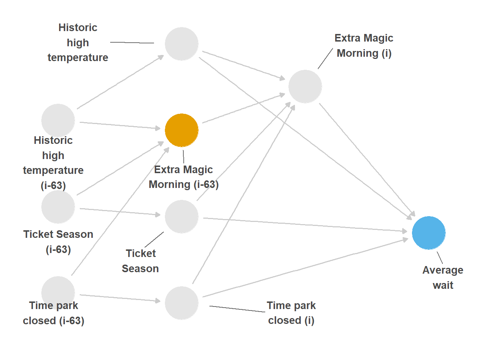
i - 63.
由于暴露发生在第 i - 63 天，我们更倾向于控制与该日相关的混杂因子，因此将使用 i - 63 版本。 我们将使用 dplyr 中的 lag() 获取这些变量。
n_days_lag <- 63
distinct_emm <- seven_dwarfs_train_2018 |>
filter(wait_hour == 9) |>
arrange(park_date) |>
transmute(
park_date,
prev_park_extra_magic_morning = lag(
park_extra_magic_morning,
n = n_days_lag
),
prev_park_temperature_high = lag(park_temperature_high, n = n_days_lag),
prev_park_close = lag(park_close, n = n_days_lag),
prev_park_ticket_season = lag(park_ticket_season, n = n_days_lag)
)
seven_dwarfs_train_2018_lag <- seven_dwarfs_train_2018 |>
filter(wait_hour == 9) |>
left_join(distinct_emm, by = "park_date") |>
drop_na(prev_park_extra_magic_morning)使用这些数据估计 IPW 效应时，我们得到 -0.93 分钟，这比在第 i 天发现的结果更接近零效应。 让我们看看效应随时间的变化。 Extra Magic Morning 的效应可能会持续一小段时间（比如一次迪士尼世界平均行程的时长），但它应该很快趋近于零。 然而，从 图 70.4 可以看到，虽然效应最终趋近于零，但残留效应相当明显。 如果这些结果准确，那么它们说明我们的效应中存在一些残余混杂。
coefs <- purrr::map_dbl(1:63, calculate_coef)
ggplot(tibble(coefs = coefs, x = 1:63), aes(x = x, y = coefs)) +
geom_hline(yintercept = 0) +
geom_point() +
geom_smooth(se = FALSE) +
labs(
y = "difference in wait times (minutes)\n on day (i) for EMM on day (i - n)",
x = "day (i - n)"
)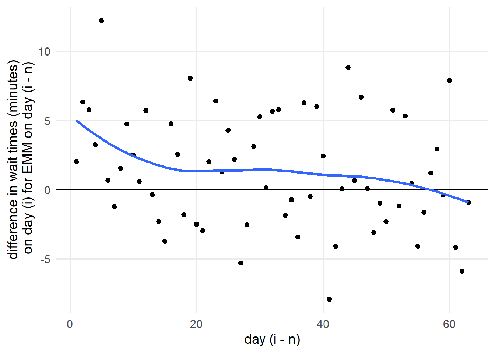
i and whether there were Extra Magic Hours on day i - n, where n represents the number of days previous to day i. We expect this relationship to rapidly approach the null, but the effect hovers above null for quite some time. This lingering effect implies we have some residual confounding present.
现在来看一个负结局对照的例子：Universal Studios 某个游乐设施的等待时间。 Universal Studios 也位于奥兰多，因此在同一天，等待时间的原因集合可能与 Disney World 相近。 当然，Disney 是否安排 Extra Magic Morning 不应影响 Universal 当天的等待时间：这是两个独立的园区，而且大多数人不会在一小时内同时游览两者。 这个负对照是一个按假定机制不太可能产生效应的例子。
我们没有 Universal 的游乐设施数据，因此来模拟有无残余混杂时会发生什么。 我们将根据历史气温、园区闭园时间和票价季节生成等待时间（后两者在技术上是 Disney 特有的，但我们预期它们与 Universal 的对应版本高度相关）。 由于这是一个负结局，它与 Disney 是否安排 Extra Magic Morning 无关。
seven_dwarfs_sim <- seven_dwarfs_train_2018 |>
mutate(
# we scale each variable and add a bit of random noise
# to simulate reasonable Universal wait times
wait_time_universal = park_temperature_high /
150 +
as.numeric(park_close) / 1500 +
as.integer(factor(park_ticket_season)) / 1000 +
rnorm(n(), 5, 5)
)如果计算 park_extra_magic_morning 对 wait_time_universal 的 IPW 效应，我们得到 0.42 分钟，正如预期，这是一个大致为零的效应。 但如果我们遗漏了一个未测量混杂因子 u，它同时导致 Extra Magic Morning 以及 Disney 和 Universal 的等待时间发生变化，会怎样？ 让我们模拟这种情形，并进一步扩展数据。
seven_dwarfs_sim2 <- seven_dwarfs_train_2018 |>
mutate(
u = rnorm(n(), mean = 10, sd = 3),
wait_minutes_posted_avg = wait_minutes_posted_avg + u,
park_extra_magic_morning = if_else(
u > 10,
rbinom(1, 1, 0.1),
park_extra_magic_morning
),
wait_time_universal = park_temperature_high /
150 +
as.numeric(park_close) / 1500 +
as.integer(factor(park_ticket_season)) / 1000 +
u +
rnorm(n(), 5, 5)
)现在，Disney 和 Universal 等待时间的效应都发生了变化。 如果我们看到 Disney 的效应为 4.81 分钟，不一定会知道结果受到混杂。 然而，既然我们知道 Universal 的等待时间应当与该暴露无关，那么结果 4.2 分钟并非零就很可疑。 这说明存在未测量混杂。
负对照利用了你所假设的因果结构的逻辑含义。 我们可以把这一想法扩展到整个 DAG。 如果 DAG 正确，它会对 DAG 中不同变量之间应该、或不应该存在怎样的关系，给出许多统计上的含义。 和负对照一样，我们可以检查数据中那些应该独立的变量是否确实独立。 有时，DAG 对变量独立性的含义取决于其他变量，这种独立性是条件性的。 因此，这种技术有时被称为隐含条件独立性 (Textor 等 2017). 让我们查询原始 DAG，看看它对这些变量之间的关系有何说明。
query_conditional_independence(emm_wait_dag) |>
unnest(conditioned_on)# A tibble: 0 x 5
# i 5 variables: set <int>, a <chr>, b <chr>,
# conditioning_set <chr>, conditioned_on <chr>在这个 DAG 中，三种关系应为零：1) park_close 与 park_temperature_high，2) park_close 与 park_ticket_season，以及 3) park_temperature_high 与 park_ticket_season。 这些关系都不需要以其他变量为条件即可实现独立；换句话说，它们应当无条件独立。 我们可以使用相关、回归以及其他统计检验等简单技术，判断这些关系是否为零。 在复杂 DAG 中，条件独立性的数量会迅速增加，因此 dagitty 实现了一种方法，可以根据这些隐含的零关系自动检查 DAG 与数据的一致性。 dagitty 检查给定条件关系的残差是否相关，这些残差可以通过多种方式自动建模。 我们将告诉 dagitty 使用非线性模型计算残差，设置为 type = "cis.loess"。 由于我们处理的是相关性，如果 DAG 正确，结果应当接近 0。 然而，从 图 70.5 可以看到，其中一种关系并不成立。 园区闭园时间与票价季节之间存在相关性。
test_conditional_independence(
emm_wait_dag,
data = seven_dwarfs_train_2018 |>
filter(wait_hour == 9) |>
mutate(
across(where(is.character), factor),
park_close = as.numeric(park_close),
) |>
as.data.frame(),
type = "cis.loess",
# use 200 bootstrapped samples to calculate CIs
R = 200
) |>
ggdag_conditional_independence()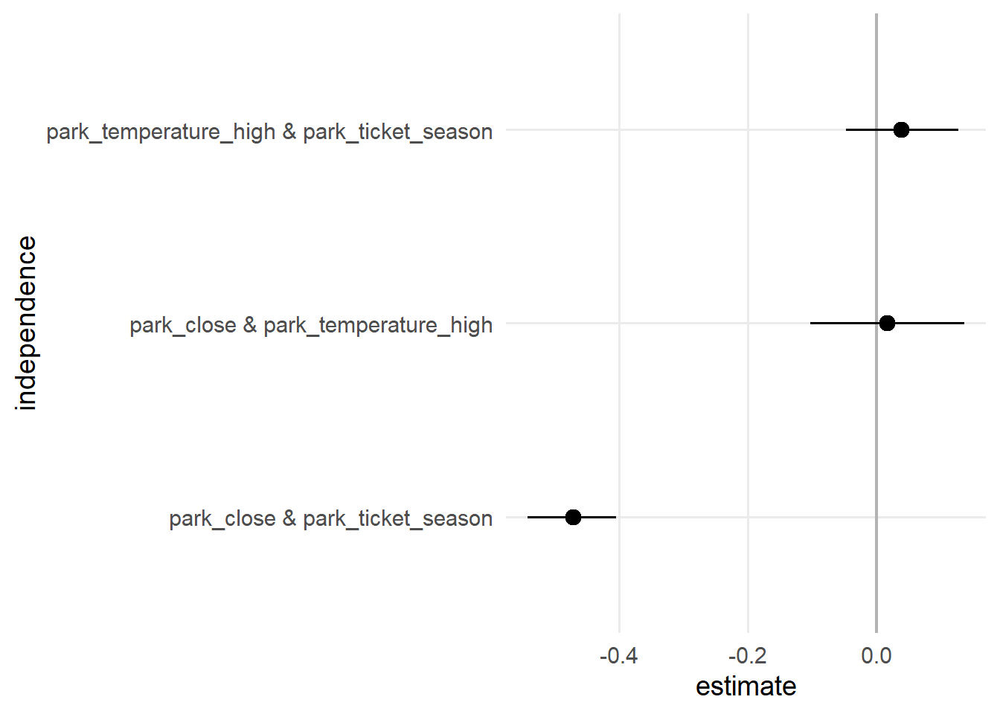
为什么会看到一个本不应存在的关系？ 一个简单解释是偶然：就像所有统计推断一样，我们需要谨慎，不能从有限样本的结果过度外推。 由于我们拥有 2018 年每一天的数据，大概可以排除这种可能。 另一个原因是，我们遗漏了从一个变量指向另一个变量的直接箭头，例如从历史气温指向园区闭园时间。 添加额外箭头是合理的：园区闭园时间和票价季节都与天气密切相关。 这提供了一点证据，表明我们遗漏了一个箭头。
此时，我们需要谨慎，避免将 DAG 过拟合于数据。 DAG-数据一致性检验不能证明 DAG 正确或错误；正如 因果推断不（只是）一个统计问题 所示，单靠统计技术也无法确定问题的因果结构。 那么为什么要使用这些检验？ 和负对照一样，它们提供了一种探查假设的方式。 尽管我们永远无法确信这些假设，但数据中确实包含信息。 发现条件独立性成立，会为支持这些假设增加一点证据。 这里存在一条微妙的界线，因此我们建议透明地报告这类检查：如果根据检验结果做了更改，也应报告原始 DAG。 值得注意的是，在此案例中，为这三种关系都增加直接箭头会得到同一个调整集。
让我们来看一个更可能设定错误的例子，其中我们移除了从园区闭园时间和票价季节指向 Extra Magic Morning 的箭头。
emm_wait_dag2 <- dagify(
wait_minutes_posted_avg ~ park_extra_magic_morning +
park_close +
park_ticket_season +
park_temperature_high,
park_extra_magic_morning ~ park_temperature_high,
coords = coord_dag,
labels = labels,
exposure = "park_extra_magic_morning",
outcome = "wait_minutes_posted_avg"
)
query_conditional_independence(emm_wait_dag2) |>
unnest(conditioned_on)# A tibble: 0 x 5
# i 5 variables: set <int>, a <chr>, b <chr>,
# conditioning_set <chr>, conditioned_on <chr>这个替代 DAG 引入了两种本应独立的新关系。 在 图 70.6 中，我们看到票价季节与 Extra Magic Morning 之间新增了一种关联。
test_conditional_independence(
emm_wait_dag2,
data = seven_dwarfs_train_2018 |>
filter(wait_hour == 9) |>
mutate(
across(where(is.character), factor),
park_close = as.numeric(park_close),
) |>
as.data.frame(),
type = "cis.loess",
R = 200
) |>
ggdag_conditional_independence()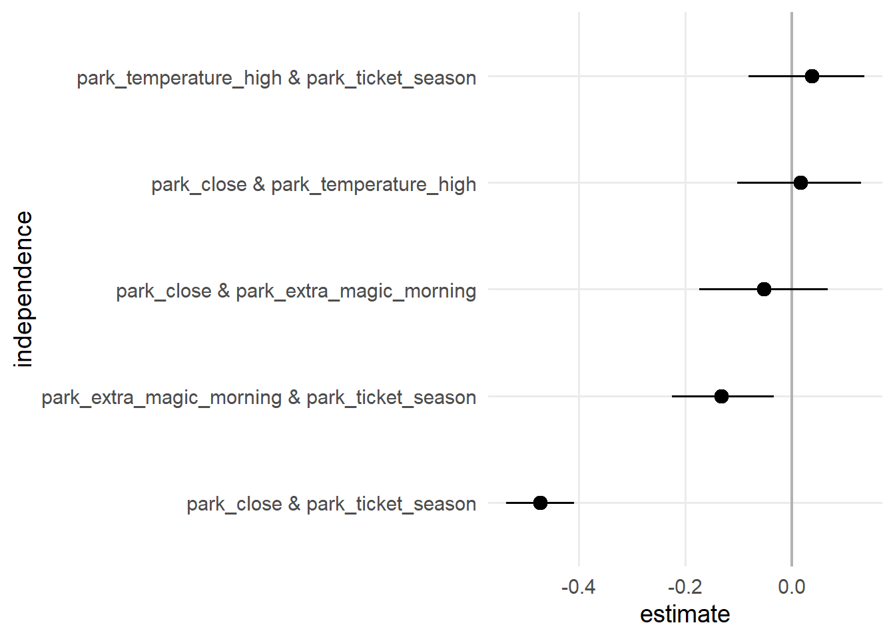
那么，这个 DAG 是错误的吗？ 根据我们对问题的理解，似乎很可能是，但解释 DAG-数据一致性检验时有一个障碍：不同 DAG 可能具有相同的一组条件独立性。 在我们的 DAG 中，另一个 DAG 也可以生成相同的隐含条件独立性（图 70.7）。 这类 DAG 被称为等价 DAG，因为它们的含义相同。
ggdag_equivalent_dags(emm_wait_dag2)curvatures <- rep(0, 10)
curvatures[c(4, 9)] <- 0.25
ggdag_equivalent_dags(emm_wait_dag2, use_edges = FALSE, use_text = FALSE) +
geom_dag_edges_arc(
data = function(x) distinct(x),
curvature = curvatures,
edge_color = "grey80"
) +
geom_dag_edges_link(
data = function(x) {
filter(
x,
(name == "park_extra_magic_morning" & to == "park_temperature_high") |
(name == "park_temperature_high" & to == "park_extra_magic_morning")
)
},
edge_color = "black"
) +
geom_dag_text_repel(
aes(label = label),
data = function(x) {
filter(
x,
label %in% c("Extra Magic\nMorning", "Historic high\ntemperature")
)
},
box.padding = 15,
seed = 12,
color = "#494949"
) +
theme_dag()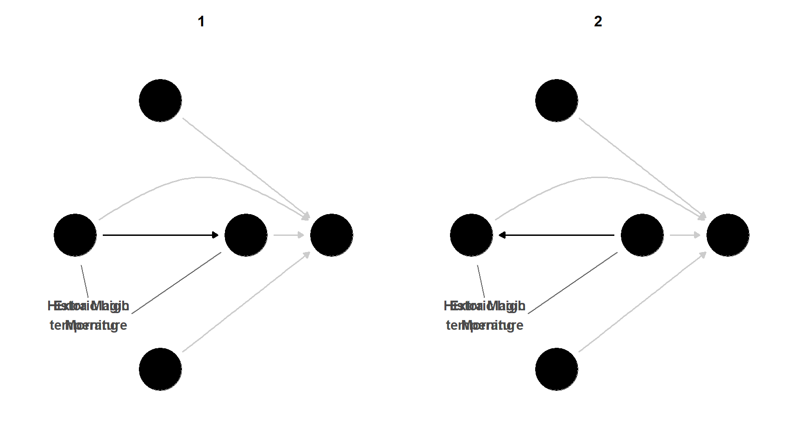
等价 DAG 通过反转箭头生成。 具有可反转箭头且能产生相同含义的 DAG 子集称为等价类。 虽然这个联系较为技术化，但它可以将可视化压缩为一个 DAG：可反转的边用没有箭头的直线表示。
ggdag_equivalent_class(emm_wait_dag2, use_text = FALSE, use_labels = TRUE)curvatures <- rep(0, 4)
curvatures[3] <- 0.25
emm_wait_dag2 |>
node_equivalent_class() |>
ggdag(use_edges = FALSE, use_text = FALSE) +
geom_dag_edges_arc(
data = function(x) filter(x, !reversable),
curvature = curvatures,
edge_color = "grey90"
) +
geom_dag_edges_link(data = function(x) filter(x, reversable), arrow = NULL) +
geom_dag_text_repel(
aes(label = label),
data = function(x) {
filter(
x,
label %in% c("Extra Magic\nMorning", "Historic high\ntemperature")
)
},
box.padding = 16,
seed = 12,
size = 5,
color = "#494949"
) +
theme_dag()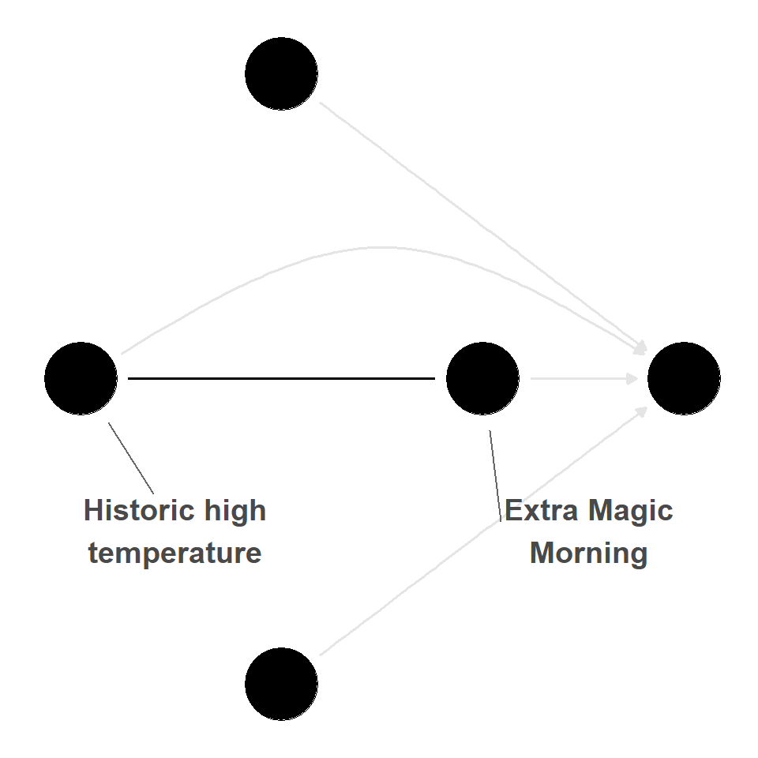
那么，我们如何利用这些信息？ 由于许多 DAG 可以产生相同的一组条件独立性，一种策略是找出对每个等价 DAG 都有效的所有调整集。 通过调用 equivalenceClass() 和 adjustmentSets()，dagitty 可以轻松完成这件事，但在这个例子中，没有相互重叠的调整集。
library(dagitty)
# determine valid sets for all equiv. DAGs
equivalenceClass(emm_wait_dag2) |>
adjustmentSets(type = "all")我们可以通过查看各个等价 DAG 来了解这一点。
dags <- equivalentDAGs(emm_wait_dag2)
# no overlapping sets
dags[[1]] |> adjustmentSets(type = "all"){ park_temperature_high }
{ park_close, park_temperature_high }
{ park_temperature_high, park_ticket_season }
{ park_close, park_temperature_high,
park_ticket_season }dags[[2]] |> adjustmentSets(type = "all") {}
{ park_close }
{ park_ticket_season }
{ park_close, park_ticket_season }好消息是，在这个例子中，其中一个等价 DAG 在逻辑上不合理：可反转的边从历史天气指向 Extra Magic Morning，但这既不符合时间顺序（历史气温发生在过去），也不符合逻辑（Disney 也许很强大，但据我们所知，它还不能控制天气）。 即使在这类检查中使用了更多数据，我们仍需考虑可能情境在逻辑上和时间顺序上的合理性。
正如 尽早并频繁迭代 中提到的，你应该提前确定 DAG，并充分听取其他专家的意见。 现在让我们采取与上一个例子相反的方法：如果我们使用原始 DAG，却在分析后收到反馈，认为应该添加更多变量，会怎样？ 考虑 图 70.9 中的扩展 DAG。 我们添加了两个新的混杂因素：是否为周末或节假日。 这个分析不同于我们在同一 DAG 中检查替代调整集的情形；当时我们检查的是 DAG 的逻辑一致性。 这里，我们考虑的是不同的因果结构。
labels <- c(
park_extra_magic_morning = "Extra Magic\nMorning",
wait_minutes_posted_avg = "Average\nwait",
park_ticket_season = "Ticket\nSeason",
park_temperature_high = "Historic high\ntemperature",
park_close = "Time park\nclosed",
is_weekend = "Weekend",
is_holiday = "Holiday"
)
emm_wait_dag3 <- dagify(
wait_minutes_posted_avg ~ park_extra_magic_morning +
park_close +
park_ticket_season +
park_temperature_high +
is_weekend +
is_holiday,
park_extra_magic_morning ~ park_temperature_high +
park_close +
park_ticket_season +
is_weekend +
is_holiday,
park_close ~ is_weekend + is_holiday,
coords = time_ordered_coords(),
labels = labels,
exposure = "park_extra_magic_morning",
outcome = "wait_minutes_posted_avg"
)
curvatures <- rep(0, 13)
curvatures[11] <- 0.25
emm_wait_dag3 |>
tidy_dagitty() |>
node_status() |>
ggplot(
aes(x, y, xend = xend, yend = yend, color = status)
) +
geom_dag_edges_arc(curvature = curvatures, edge_color = "grey80") +
geom_dag_point() +
geom_dag_text_repel(
aes(label = label),
size = 3.8,
seed = 16301,
color = "#494949"
) +
scale_color_okabe_ito(na.value = "grey90") +
theme_dag() +
theme(legend.position = "none") +
coord_cartesian(clip = "off")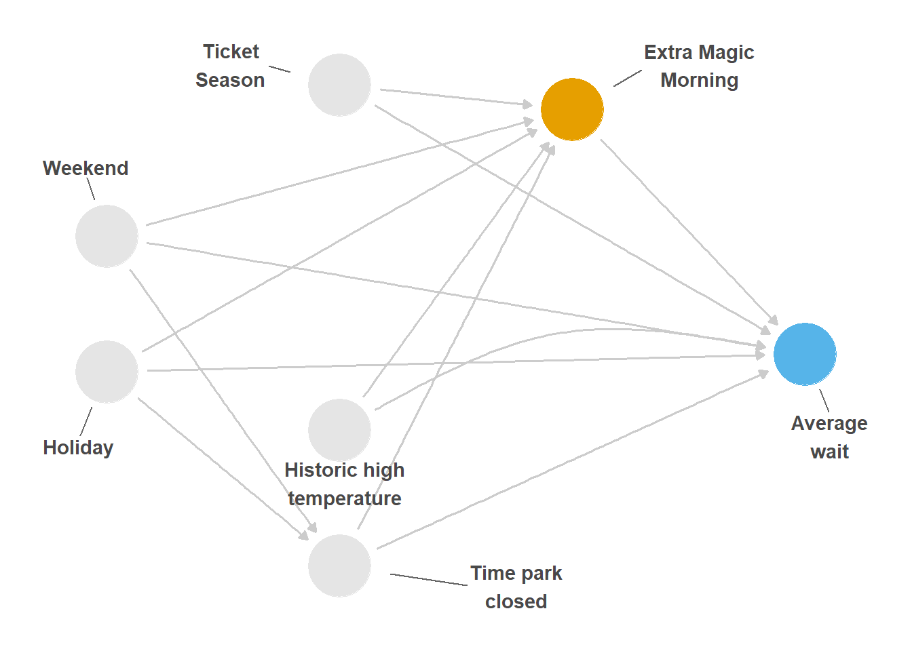
我们可以使用 timeDate 包，根据 park_date 计算这些特征。
library(timeDate)
holidays <- c(
"USChristmasDay",
"USColumbusDay",
"USIndependenceDay",
"USLaborDay",
"USLincolnsBirthday",
"USMemorialDay",
"USMLKingsBirthday",
"USNewYearsDay",
"USPresidentsDay",
"USThanksgivingDay",
"USVeteransDay",
"USWashingtonsBirthday"
) |>
holiday(2018, Holiday = _) |>
as.Date()
seven_dwarfs_with_days <- seven_dwarfs_train_2018 |>
mutate(
is_holiday = park_date %in% holidays,
is_weekend = isWeekend(park_date)
) |>
filter(wait_hour == 9)Extra Magic Morning 时段和公布的等待时间都与当天是否为节假日或周末有关。
tbl_data_days <- seven_dwarfs_with_days |>
select(
wait_minutes_posted_avg,
park_extra_magic_morning,
is_weekend,
is_holiday
)
library(labelled)
var_label(tbl_data_days) <- list(
is_weekend = "Weekend",
is_holiday = "Holiday",
park_extra_magic_morning = "Extra Magic Morning",
wait_minutes_posted_avg = "Posted Wait Time"
)
tbl1 <- gtsummary::tbl_summary(
tbl_data_days,
by = is_weekend,
include = -is_holiday
)
tbl2 <- gtsummary::tbl_summary(
tbl_data_days,
by = is_holiday,
include = -is_weekend
)
gtsummary::tbl_merge(list(tbl1, tbl2), c("Weekend", "Holiday"))| Characteristic |
Weekend
|
Holiday
|
||
|---|---|---|---|---|
| FALSE N = 2531 |
TRUE N = 1011 |
FALSE N = 3431 |
TRUE N = 111 |
|
| Posted Wait Time | 67 (60, 77) | 65 (56, 75) | 66 (58, 77) | 76 (60, 77) |
| Extra Magic Morning | 55 (22%) | 5 (5.0%) | 59 (17%) | 1 (9.1%) |
| 1 Median (Q1, Q3); n (%) | ||||
重新拟合 IPW 估计量时，我们得到 7.58 分钟，比不包含这两个新混杂因子时略大。 由于这偏离了分析计划，你可能应该报告两种效应。 不过，这个新的 DAG 可能比原始 DAG 更正确。 然而，从决策角度看，绝对差异很小（约一分钟），而且效应方向与原始估计值相同。 换句话说，就我们可能如何依据这些信息采取行动而言，结果对这一变化并不十分敏感。
这里还有一点：有时，人们会展示使用越来越复杂的调整集所得的结果。 这源于将复杂模型与简约模型进行比较的传统。 这种比较本身就是一种敏感性分析，但应当遵循原则：你应该比较相互竞争的调整集或条件，而不是为了简单而拟合简单模型。 例如，你可能认为这两个 DAG 同样合理，或者想考察加入其他变量是否能更好地捕捉 Magic Kingdom 的基线客流。
到目前为止，我们探讨了因果结构相关问题中所作的一些假设。 我们可以使用定量偏倚分析进一步推进，它利用数学假设来考察结果在不同条件下会如何变化。
在观察性研究中，针对未测量混杂的敏感性分析是评估研究发现对潜在未测量因素稳健性的重要工具 (D’Agostino McGowan 2022)。 这些分析依赖三个关键组成部分：
通过为这些关系指定合理的值，研究者可以量化：如果存在这样的未测量混杂因子，观测效应可能改变多少。
让我们结合上面的例子思考为什么这样做有效。 假设 图 70.10 展示了暴露与所关注结局之间的真实关系。 假设我们没有测量历史最高气温（图中用虚线表示）；这就是一个未测量混杂因子。 上述三个关键组成部分分别由以下内容表示：1）“Extra Magic Morning”和“平均等待时间”之间的箭头；2）“历史最高气温”和“Extra Magic Morning”之间的箭头；3）“历史最高气温”和“平均等待时间”之间的箭头。
curvatures <- rep(0, 7)
curvatures[5] <- 0.3
emm_wait_dag |>
tidy_dagitty() |>
node_status() |>
mutate(
linetype = if_else(name == "park_temperature_high", "dashed", "solid")
) |>
ggplot(
aes(
x,
y,
xend = xend,
yend = yend,
color = status,
edge_linetype = linetype
)
) +
geom_dag_edges_arc(curvature = curvatures, edge_color = "grey80") +
geom_dag_point() +
geom_dag_text_repel(
aes(label = label),
size = 3.8,
seed = 1630,
color = "#494949"
) +
scale_color_okabe_ito(na.value = "grey90") +
theme_dag() +
theme(legend.position = "none") +
coord_cartesian(clip = "off") +
scale_x_continuous(
limits = c(-1.25, 2.25),
breaks = c(-1, 0, 1, 2)
)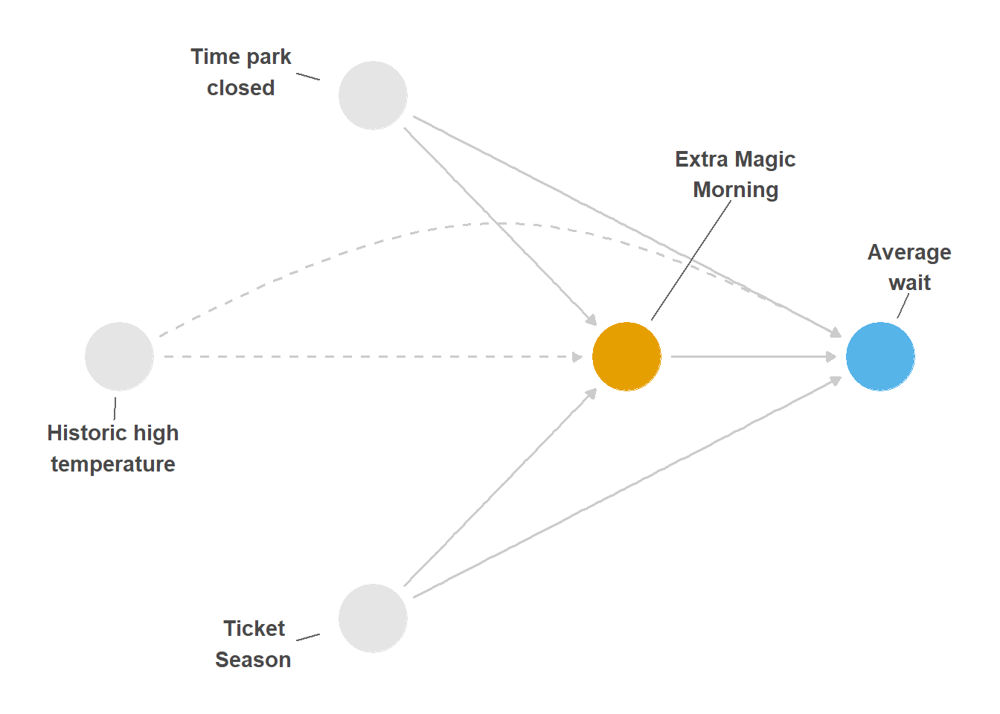
各种方法可用，具体取决于结局类型（例如连续型、二分类或生存时间型）以及我们对潜在未测量混杂因子了解多少。 虽然这些分析无法证明不存在未测量混杂，但它们能让我们了解结果对“无未测量混杂因子”这一观察性研究因果推断关键假设的违反有多敏感。
第一个组成部分，即观测到的暴露-结局效应，是所提出的目标因果效应，也就是你想针对其开展敏感性分析的效应。 效应本身取决于结局模型的选择，而结局模型通常又取决于结局的分布和所需的效应度量：
对于连续型结局：使用线性模型或高斯分布、恒等链接的广义线性模型（GLM），通常估计一个系数。
对于二分类结局，我们有几种选择：
让我们使用 表 70.1 中的分析，此处只对“公园闭园时间”和“票务季节”进行了调整。 根据 图 70.10，我们知道“历史最高气温”也是混杂因子，但它未被测量，因此不能将其纳入实际调整集。 这得到的观测效应为 6.58。
未测量混杂因子与暴露之间的关系可以通过三种方式刻画：
这些刻画方式让研究者能够在敏感性分析中指定未测量混杂因子-暴露关系，适应不同类型的混杂因子以及对其分布了解程度的差异。
这里的未测量混杂因子“历史最高气温”是连续型。 在这个例子中，假设它服从正态分布。 我们假设“单位方差”（方差为 1），因为这样更容易用标准差单位讨论混杂因子的影响。 假设有 Extra Magic Morning 时段的日期，其历史最高气温服从均值 80.5 度、标准差 9 度的正态分布。 同样，假设没有 Extra Magic Morning 时段的日期，其历史最高气温服从均值 82 度、标准差 9 度的正态分布。 将这些变量除以标准差 9，就可以把它们转换为服从单位方差的正态分布变量（有时称为对变量进行标准化）；这样，有 Extra Magic Morning 时段日期的标准化均值为 8.94，其他日期为 9.11，均值差为 -0.17。 记住这个数；下一节进行敏感性分析时会将其用上。
未测量混杂因子与结局之间的关系主要有两种量化方法：
基于系数的方法：在充分调整的结局模型中估计未测量混杂因子的系数。 也可以估计指数化后的系数（风险比、优势比或危险比）
与分布无关的方法（适用于连续型结局）：使用部分 \(R^2\)，表示在考虑暴露和已测量混杂因子后，结局变异中由未测量混杂因子解释的比例
让我们采用基于系数的方法。 在本例中，我们需要估计：在调整暴露以及其他已测量混杂因子（这里是票务季节和公园闭园时间）后，标准化“历史最高气温”变量与结局之间的系数应当是多少。 在这个问题中，也可以这样描述这一效应：“在调整是否有 Extra Magic Morning 时段、公园闭园时间和票务季节后，如果将历史最高气温提高一个标准差，平均公布等待时间会如何变化？” 假设我们认为它会变化 -2.3 分钟。 也就是说，如果历史最高气温提高一个标准差单位（在本例中即升高 9 度），我们预计平均公布等待时间会减少 2.3 分钟。
关于这些量的数学解释，见 D’Agostino McGowan (2022)。
一旦估计出上述三个量，我们就可以计算暴露与结局之间的更新效应估计值，并纳入类似上述指定的未测量因素。 我们可以使用 {tipr} R 包执行这些分析。 {tipr} R 包中的函数遵循统一语法。 函数名遵循这种形式：{action}_{effect}_with_{what}。
例如，要使用二分类未测量混杂因子（what）调整（action）系数（effect），我们使用函数 adjust_coef_with_binary()。
下面是 Lucy 和 McGowan (2022) 中包含的该软件包表格副本。
tipr 函数的语法。
| category | Function term | Use | |
|---|---|---|---|
| action | adjust |
这些函数会调整观测效应，需要同时指定未测量 | 混杂因子与暴露之间的关系，以及未测量混杂因子与结局之间的关系。 |
tip |
这些函数会使观测效应发生翻转。只需指定一种关系，可以是未测量混杂因子与暴露之间的关系，也可以是未测量混杂因子与结局之间的关系。 | ||
| effect | coef |
这些函数用于指定线性、对数线性、logistic 或 Cox 比例风险模型中的观测系数 | |
rr |
这些函数用于指定观测风险比 | ||
or |
这些函数用于指定观测优势比 | ||
hr |
这些函数用于指定观测危险比 | ||
| what | continuous |
这些函数用于指定一个未测量的标准化正态分布混杂因子。函数将包含参数 exposure_confounder_effect 和 confounder_outcome_effect |
|
binary |
这些函数用于指定一个未测量的二分类混杂因子。函数将包含参数 exposed_confounder_prev、unexposed_confounder_prev 和 confounder_outcome_effect |
||
r2 |
这些函数用于指定未测量混杂因子，其参数是由该混杂因子解释的暴露/结局变异百分比。函数将包含参数 confounder_exposure_r2 和 outcome_exposure_r2 |
你可以在这里找到完整文档：r-causal.github.io/tipr/
好，现在我们已经具备开展敏感性分析所需的一切。 表 70.3 提供了所需信息；我们可以使用 {tipr} R 包应用这些方法，这里将使用 adjust_coef 函数。 将上面为三个参数确定的量代入：effect_observed、exposure_confounder_effect 和 confounder_outcome_effect。
library(tipr)
adjust_coef(
effect_observed = 6.58,
exposure_confounder_effect = -0.17,
confounder_outcome_effect = -2.3
)# A tibble: 1 x 4
effect_adjusted effect_observed
<dbl> <dbl>
1 6.19 6.58
# i 2 more variables:
# exposure_confounder_effect <dbl>,
# confounder_outcome_effect <dbl>查看该输出可见，如果存在我们上面指定的未测量混杂因子，观测效应 6.58 会减弱为 6.19。 也就是说，假设我们对未测量混杂因子的设定正确，Extra Magic Morning 时段使上午 9 点平均公布等待时间增加的效应，不是 6.58 分钟，而是真实效应 6.19 分钟。 看看 表 70.1，这个数字应该很熟悉。
在本例中，我们对未测量混杂因子与暴露及结局之间关系的“猜测”是准确的，因为它实际上已经被测量！ 现实中，我们往往需要使用其他技术来得出这些猜测。 有时，我们可以获得不同的数据或既往研究，从而量化这些效应。 有时，我们掌握其中一个效应的信息，却不了解另一个（也就是说，我们可能猜得到历史最高气温对平均公布等待时间的影响，却不知道它是否影响是否有 Extra Magic Morning 时段）。 在这些情况下，一种解决方案是采用基于数组的方法：指定我们确定的效应，并改变我们不确定的效应。 来看一个例子。 我们可以绘制这个数组，帮助我们了解这一潜在混杂因子的影响。 查看 图 70.11，例如可以看到：如果历史最高气温相差一个标准差，使有 Extra Magic Morning 时段日期的气温平均比没有该时段的日期低 9 度，那么 Extra Magic Morning 时段对上午 9 点平均公布等待时间的真实因果效应将为 4.28 分钟，而非观测到的 6.58 分钟。
library(tipr)
adjust_df <- adjust_coef(
effect_observed = 6.58,
exposure_confounder_effect = seq(0, -1, by = -0.05),
confounder_outcome_effect = -2.3,
verbose = FALSE
)
ggplot(
adjust_df,
aes(
x = exposure_confounder_effect,
y = effect_adjusted
)
) +
geom_hline(yintercept = 6.58, lty = 2) +
geom_point() +
geom_line() +
labs(
x = "Exposure - unmeasured confounder effect",
y = "Adjusted Effect"
)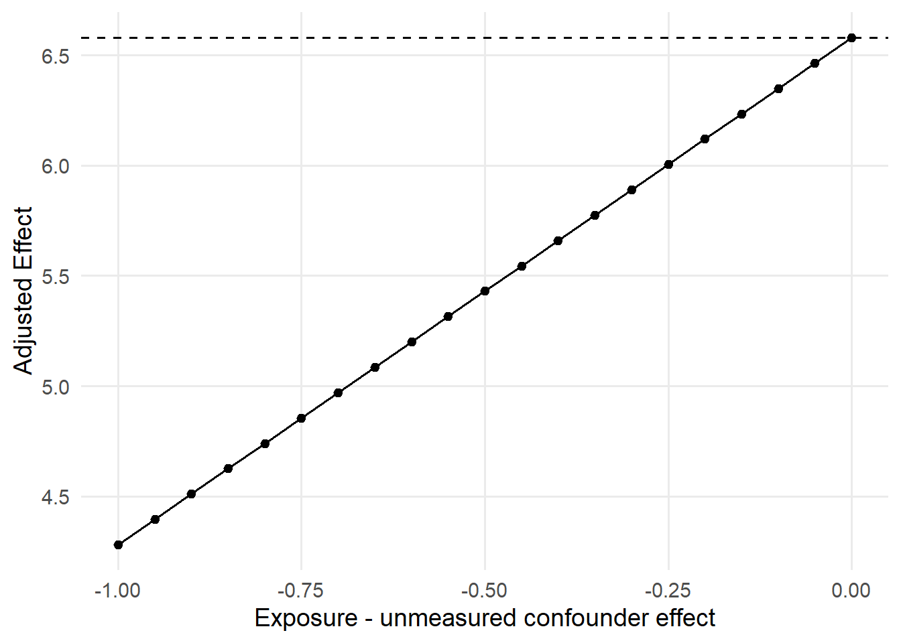
很多时候，我们并不确定潜在未测量混杂因子对暴露和结局的影响。 一种方法是为两个值都设定需要考察的范围。 图 70.12 就是一个例子。 从图中可以了解到：当历史最高气温变化一个标准差使平均公布等待时间至少改变 ~7 分钟，并且有 Extra Magic Morning 时段日期与无该时段日期的平均历史气温相差约一个标准差时，调整后的效应将跨过零效应值。 这称为临界点。
library(tipr)
adjust_df <- adjust_coef(
effect_observed = 6.58,
exposure_confounder_effect = rep(seq(0, -1, by = -0.05), each = 7),
confounder_outcome_effect = rep(seq(-1, -7, by = -1), times = 21),
verbose = FALSE
)
ggplot(
adjust_df,
aes(
x = exposure_confounder_effect,
y = effect_adjusted,
group = confounder_outcome_effect
)
) +
geom_hline(yintercept = 6.58, lty = 2) +
geom_hline(yintercept = 0, lty = 3) +
geom_point() +
geom_line() +
geom_label(
data = adjust_df[141:147, ],
aes(
x = exposure_confounder_effect,
y = effect_adjusted,
label = confounder_outcome_effect
)
) +
labs(
x = "Exposure - unmeasured confounder effect",
y = "Adjusted Effect"
)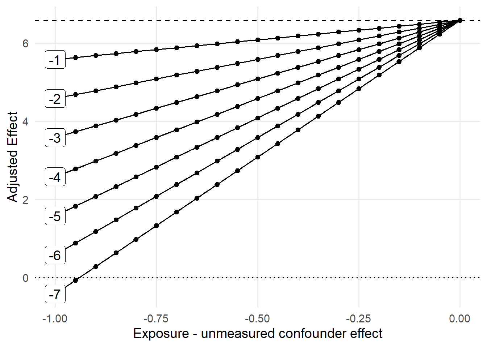
临界点敏感性分析旨在确定未测量混杂因子的特征，使观测效应变为特定值，通常是零效应值。 它不再探索未知敏感性参数的一系列取值，而是确定能使观测效应发生“翻转”的取值。 这种方法可应用于点估计或置信区间界限。 该分析计算会导致这种翻转的未测量混杂因子的最小可能效应。 通过重新排列方程，并将调整后的结局设为零效应值（或任何感兴趣的值），在给定其他参数的情况下，我们可以求解一个敏感性参数。 {tipr} R 包也提供函数，在不同情境下执行这些计算，包括不同效应度量、混杂因子类型和已知关系。
使用上面的例子，让我们使用 tip_coef 函数看看什么条件会使观测系数发生翻转。 为此，只需指定一个值：暴露-未测量混杂因子效应或未测量混杂因子-结局效应；函数将计算另一个值，使观测效应翻转到零效应值。 首先复现 图 70.12 中的结果。 指定未测量混杂因子-结局效应为 -7 分钟。 下面的输出告诉我们：如果存在一个对结局的效应为 -7 分钟的未测量混杂因子，那么它需要具有 -0.94 的差异，才能使我们的观测效应 6.58 分钟发生翻转。
tip_coef(
effect_observed = 6.58,
confounder_outcome_effect = -7
)# A tibble: 1 x 4
effect_observed exposure_confounder_effect
<dbl> <dbl>
1 6.58 -0.94
# i 2 more variables: confounder_outcome_effect <dbl>,
# n_unmeasured_confounders <dbl>相反，假设我们相当确定上面假设的未测量混杂因子-结局效应为 -2.3，但不确定历史最高气温与当天是否有 Extra Magic Morning 时段之间的关系应当是什么。 让我们看看：要使这样的混杂因子将观测效应 6.58 分钟翻转为 0 分钟，该差异需要多大。
tip_coef(
effect_observed = 6.58,
confounder_outcome_effect = -2.3
)# A tibble: 1 x 4
effect_observed exposure_confounder_effect
<dbl> <dbl>
1 6.58 -2.86
# i 2 more variables: confounder_outcome_effect <dbl>,
# n_unmeasured_confounders <dbl>这表明，我们需要暴露与混杂因子之间的效应为 -2.86。 换句话说，在这个例子中，历史气温的平均差异需要约为 ~25 度（-2.86 乘以标准差 9），才能使效应变为零效应值。 这是一个非常大的、可能不合理的效应。 如果我们遗漏了历史最高气温，并且假定 -2.3 的估计是正确的，那么我们可以相当有信心地认为，遗漏这个变量不会使结果偏倚到方向完全错误的程度。